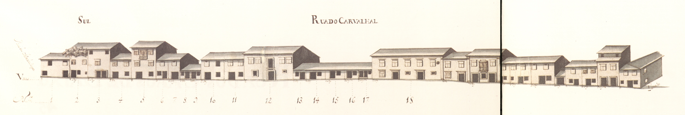

Rua da Fonte da Carcova- Norte.
Rua da Fonte da Carcova- Sul
Descrição: A sua fundação, remontará talvez aos inícios do séc. XVI. Marginando a muralha
medieval, fazia ligação entre os dois novos e amplos campos então abertos, de Santa Ana
e da Vinha. No seu extremo Este existia, desde a Idade Média, uma fonte, conhecida pela Fonte da
Cárcova ou Cárcoda. Embora a sua ocupação se tenha iniciado de imediato (p.ex. o prazo do Cabido
mais antigo nesta rua data de 1531), ee incidiu apenas sobre o lado Norte, porque no mapa
de Braunio não se vê ainda nenhuma construção encostada à muralha. Em 1750 mostrava bem a razão por que foi denominada, em data que desconehcemos,
de rua dos Mercadores: o rés-do-chão era totalmente ocupado com largas portas de madeira
que durante o dia se abriam para afzer o comércio. De resto é predominantemente ocupada com prédios de 3 andares, e janelas bracarenses, e poucas varandas
e gelosias. Diferentes são apenas os prazos 5, 6 e sobretudo o 7, onde se vê uma construção setecentista
já de certa dimensão, com duas varandas, «molduras» de pedra nas aberturas e, sobretudo, um dos vãos
extremos da casa tem mais um piso, reminiscência talvez de opções estilísticas mais arcaicas. Das 27 casas aqui desenhadas e que correspondem apenas ao lado Norte da rua, 10 eram prazos do
Cabido. Desde 1865 que passou a ser oficialmente denominada de rua dos Capelistas. Aberta em data desconhecida. No Tombo do Cabido (cª 1369-80), já figura este
topónimo. Estabelecida a ligação entre o largo dos Penedos e os espaços onde bastante
mais tarde, nos meados do séc. XVII, se construiu a igreja e convento do Carmo. Em 1750, era uma rua que alternava, um pouco a esmo, casas de 1, 2 ou 3 pisos,
de bom ou mau desenho, de famílias pobres ou ricas, numa indefinição absoluta: vêem-se aqui
casas grandes, com bom trabalho de pedra e casas do tipo de porta com janela ao lado, no piso
térreo. Só com uma leitura dos prazos se poderá definir o tipo de vivência que nela se fazia,
o que nos parece poder dar resultados muitíssimo interessantes. Das 27 casas aqui desenhadas e que correspondem apenas ao lado Sul da rua, 18 eram prazos
do Cabido. Mantém o nome de rua do Carvalhal.